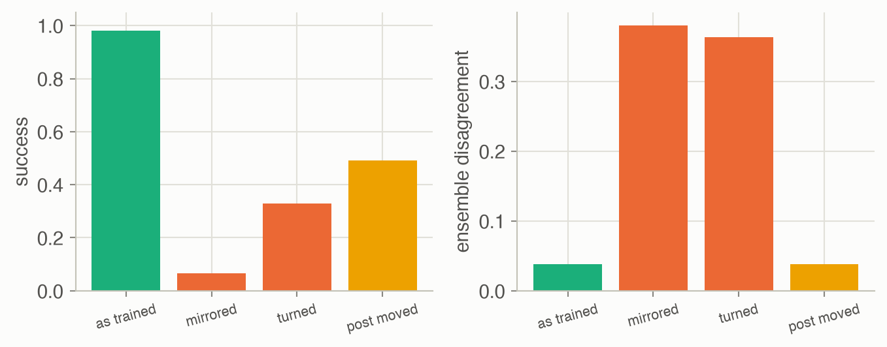
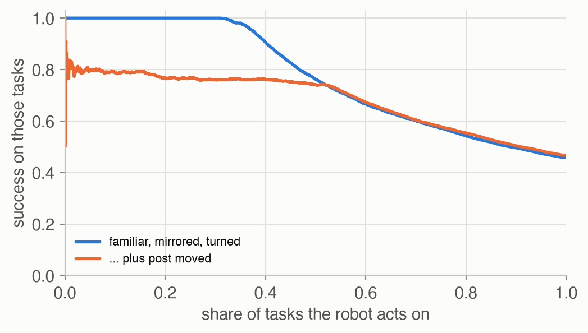
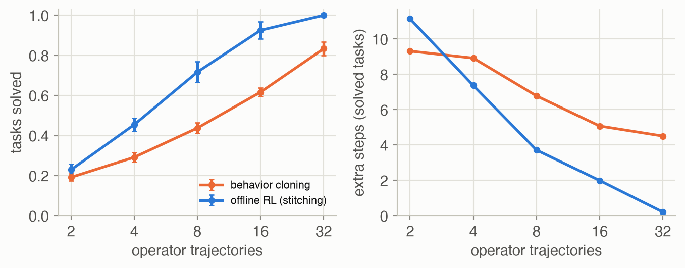
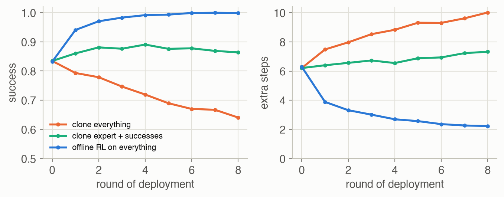

Week 11 · Frontiers & Open Problems
Lecture of 11 May 2026 · guest: Lucas Beyer
Big picture
Where this week fits
This is the lecturer’s last lecture, and it looks ahead. Every week, someone announces that robotics is solved ▶ 01:02. Take one of those robots out of its lab, though, with new lighting, new objects or a new camera angle, and it breaks quickly ▶ 03:07. The lecturer’s not-so-secret recipe for an impressive demo: collect lots of data on your own robot, clone it until extrapolation becomes interpolation, and train and test on the same day ▶ 04:09. The real goal is generalization to the whole world, the way people cook in a kitchen they have never seen by composing what they already know ▶ 05:13. The lecture lays out what stands between the course’s tools and that goal, then gives advice on doing research, and the guest traces how vision itself got from “doesn’t work” to “solved”.
The question this week answers: what are the open problems of robot learning, why are they hard, and which ideas from the course point towards solving them?
The key ideas at a glance
- Generalists versus specialists. Foundation models generalize but lack physical grounding; robot specialists are grounded and dexterous but narrow. The aim is both at once.
- Open choices: backbone, data recipe, data collection. A vision-language model, a video model or training from scratch; web, simulated, human and robot data in some mix; collection interfaces that trade scale against fidelity to the robot.
- Dexterity needs more than vision. Touch and force data are scarce, rarely paired with other senses, and different on every robot.
- Knowing what you don’t know. Deciding when to act, when to think and when to ask for help requires a model that can tell when it is out of its depth: introspection.
- Beyond imitation. Cloning is bounded by its demonstrations; RL can stitch pieces of different demonstrations and improve on them, and is the way to learn from a robot’s own mixed-quality experience (the data flywheel).
- Lifelong learning, rapid adaptation, mobility and memory. Robots should improve with experience, adapt from a correction or a demonstration in context, move through buildings with one model, and remember across time scales.
- From the guest: pre-train, mid-train, fine-tune; scale model, data and training time together; and look at your data.
Vocabulary
| Term | Plain meaning |
|---|---|
| Physical grounding | Knowing what actually happens in the world, not only how to describe it |
| Backbone | The pretrained network a policy starts from: a VLM, a video model, or none |
| Data recipe | The mix and order of data a model is trained on |
| Embodiment gap | The difference between the body in the data (a human hand) and the robot’s |
| Introspection | A model’s ability to tell when it does not know |
| Ensemble disagreement | The spread of several independently trained models’ outputs, used as an uncertainty estimate |
| Stitching | Combining pieces of different trajectories into a new, better one (offline RL) |
| Data flywheel | Deploy, collect data, retrain, deploy a better robot, repeat |
| Co-training | Training on several data sources at once, such as expert demos and autonomous rollouts |
| Catastrophic forgetting | Losing old abilities when fine-tuned on new data |
| In-context adaptation | Adapting from a correction or demonstration given as input, without changing weights |
| Mid-training | Training after pre-training that teaches core skills (reading text, locating objects) |
After this week you can
- Name the main open problems in robot learning and say why each is hard.
- Explain why a cloned policy cannot exceed its demonstrations, and how offline RL stitches.
- Explain why mixing expert data with a robot’s own rollouts can make cloning worse.
- Use ensemble disagreement to decide when to act and when to ask, and name a failure it cannot catch.
- Describe CLIP and SigLIP training, and why contrastive pre-training misses relations.
- Apply the lecturer’s checklist for choosing and running a research project.
Intuition
TipAnalogy
A new driver taught only on one commute can drive it perfectly, and nothing else. A good driver has seen enough roads to combine what they know on a road they have never driven, notices when the situation is beyond them, and keeps getting better from their own driving, including from their own mistakes. Robot learning today mostly produces the first driver; the open problems are what it would take to produce the second.
Generalists, specialists and the missing grounding
Vision-language models are trained on internet-scale data and generalize broadly, but they lack physical grounding: one can describe a glass on a table without knowing that pushing it off the edge breaks it ▶ 06:46. Video models render convincing liquids and falling objects that, on a close look, break basic physics ▶ 07:18. Robot specialists are the opposite: dexterous, using richer senses, and narrow ▶ 07:49. The path the lecture argues for is to feed foundation models embodied data, which is multimodal, spatial and temporal, so that they can act in the world and not only describe it ▶ 08:20. Brooks made a version of this argument in 1991 (see the discussion papers): intelligence built on representations disconnected from sensing and acting goes astray, and the world should be its own model.
Three questions follow, all still open. Which backbone? A VLM, for its semantic knowledge; a generative video model, because predicting how scenes evolve is closer to what a policy needs; or nothing at all, training from scratch on enough robot data ▶ 09:22 ▶ 10:22, the question Week 8’s guest addressed. Which data recipe? Web data, then simulation, then a little real data; or skip simulation; or video first, then human egocentric video, then robot actions; or real robot data only ▶ 11:25 ▶ 12:29. How to collect real data? Interfaces trade scale against how closely the data match the robot: egocentric human video offers tens of millions of hours but a human body; teleoperation matches the robot exactly but is slow and expensive; gloves and handheld grippers sit between ▶ 14:01 ▶ 15:04.
Dexterous generalists need more than vision
Dexterity and generalization have needed different ingredients: dexterity wants fast control and senses such as touch, generalization wants large, slow foundation models, plus mobility so that the robot sees many places ▶ 16:38 ▶ 17:41. The lecturer showed a robot from his PhD that predicted a mug’s shape from a single image, missed the handle, and crushed the mug, because it had no touch or force feedback; today’s VLAs are probably still crushing objects, mostly blind at the moment of contact ▶ 19:47. Simply adding touch and force to one big multimodal model runs into the long tail of robot sensing: such data are scarce, rarely recorded together with the other senses, and different on every robot ▶ 20:50 ▶ 21:20. One answer from the lecturer’s group, FuSe, uses language as the glue: tie touch and sound to descriptions, and a policy can “pick the object that feels squishy” or describe what it is touching inside a bag ▶ 22:23.
When should a robot think, and does it know when it doesn’t know?
Week 10 made robots reason. But a home robot should not deliberate before every familiar action: in distribution, act at full speed with no reasoning; near the edge of its experience, spend test-time compute; far outside it, stop and ask a person ▶ 24:29 ▶ 25:33. That whole scheme assumes the robot can tell which case it is in ▶ 26:35. This is the problem of introspection, and large models make it harder: they complete patterns well while being poorly calibrated about their own competence, and a new situation can look superficially familiar ▶ 27:05. In robotics a policy can fail along many axes at once: objects, environments, embodiment, tasks, sensor noise ▶ 27:37.
The third toy tests one popular answer, an ensemble: train 5 policies on the same demonstrations from different random starts and resamples of the data, and treat their disagreement as uncertainty. The task is Week 9’s: drive a point from the left of a table round a post in the middle to a goal on the right. Then test it four ways: on tasks like the training ones; mirrored, from right to left; turned, from bottom to top; and like the training ones but with the post moved 0.3 upwards, something the policy cannot see, because the post’s position is not one of its inputs.

The ensemble does well on what it can see (Figure 3). On mirrored and turned tasks its members disagree 10 and 10 times more than on familiar ones, and those are exactly the tasks where it fails (success 0.07 and 0.33). With the post moved, success falls to 0.49, and the disagreement is exactly what it was on the familiar tasks: the inputs are the same, so every network computes the same outputs and drives into the post with full confidence. If the robot asks for help whenever disagreement exceeds what 99% of familiar tasks show, it asks on 100% of mirrored tasks and on 1.0% of the moved-post ones. Disagreement measures how unfamiliar the input is, not whether the world still works as the data said, which is the lecture’s warning about situations that look familiar.

Ranked by disagreement, the robot can keep the familiar third of the first mix and succeed on 99% of it (Figure 4). Add the moved-post tasks and no threshold separates them from the familiar ones: at half coverage success is only 74%. A useful introspection signal has to see the failure, which here would mean sensing the post or noticing contact.
Imitation is bounded by its demonstrations
Most robot policies in this course were trained by imitation, and a cloned policy is bounded by its data ▶ 28:38. The lecture’s example: demonstrations go from state 1 to 2 and from 2 to 3. However large the model, cloning cannot learn to go from 1 to 3, let alone that a better route exists ▶ 29:10. Offline RL can: it learns values for states from all the data and stitches sub-optimal trajectories into better ones ▶ 29:41. Getting RL to work at scale on real robots is, in the lecturer’s view, among the highest-impact problems to work on ▶ 30:45.
The first toy builds that example in a small building: two rooms joined by an opening, and a corridor below reached through two doors. Operators walk between landmarks A to F, mostly straight but straying a quarter of the time. Behavior cloning is goal-conditioned with hindsight relabelling: every step that some trajectory took on its way to a later visit of the goal becomes training data for that goal. Offline RL, in a deterministic world with one unit of cost per step, reduces to the shortest path through the transitions the data contain.
What to watch for. The map stays still; only the paths change. The data are an operator’s walk from A to B (10 steps, with a stray step at the start) and another’s from B to C (12 steps). Asked to go from A to C, the cloned policy finds no step in the data that was on the way to C from A, so it acts at random and circles near A until its 40 steps run out. Offline RL treats the data as a set of moves: from A it follows the first demonstration down through the door, switches to the second where they meet, drops the stray step, and arrives in 16 steps, which is also the shortest path in the building (16 steps). Neither demonstration does that; together they contain it.

With 8 trajectories, cloning solves 44% of the 30 tasks and offline RL 72%; with 32, 83% against 100% (Figure 5). Cloning can only repeat a route some operator took from here to the goal, stray steps included: even on the tasks it solves it takes 4.5 extra steps at 32 trajectories, where offline RL takes 0.2. Offline RL joins pieces of different trajectories and drops their detours, so it can beat every operator. With only 2 trajectories there is little to join, and the two are close (0.19 and 0.23). Where a policy has no data for its goal, both move at random, so a few of these successes are luck.
The data flywheel, and why mixing data naively fails
The holy grail is a data flywheel: better models make more capable robots, which get deployed more widely, which produce more data, which make better models ▶ 31:16. The obvious way to start it is to co-train on the expert’s demonstrations and the robot’s own rollouts ▶ 31:47. It is harder than it looks: expert data are smooth, dense and near-optimal; autonomous rollouts are longer, jerkier and often sub-optimal, and naively cloning both confuses the model ▶ 32:18 ▶ 32:49. New algorithms are needed that learn from all of a robot’s experience, good or bad, and never throw data away ▶ 33:21.
The second toy runs the flywheel in the same building. A human operator gives 6 demonstrations of one task, always the long way round: down through the left door and along the corridor, 6–8 steps longer than the shortest route through the opening between the rooms. Then each round the robot is deployed 10 times from random places, exploring a little (a random move 20% of the time), its rollouts join the data, and it is retrained in one of three ways: clone everything; clone the expert plus only the rollouts that succeeded; or offline RL on everything.

All three start at the same policy (success 0.83; the expert’s demonstrations cover only the left room and the corridor). Cloning everything gets worse every round, ending at 0.64 with 10.0 extra steps: after 8 rounds the expert’s data are 7% of the total, and the policy is mostly copying its own exploration noise (Figure 7). Cloning only the successes avoids the decline but barely improves (0.86), since a successful rollout is still a wandering one. Offline RL uses every transition, including those of failed rollouts, and reaches 1.00 with 2.2 extra steps, shorter than the operator’s own habit: the robot’s exploration found the opening the operator never used.
Learning for a lifetime, adapting in a moment
The flywheel is one face of lifelong learning: a robot should keep improving from its experience, while today a model is trained, frozen and deployed ▶ 33:52. Fine-tuning on deployment data must also avoid forgetting what the model already knew ▶ 34:56. The immediate version is rapid adaptation: a new home robot struggles with the fridge handle; a word (“grasp a bit more to the left”) or a quick demonstration placed in the model’s context should be enough, without retraining, which is in-context learning for robots (Week 10’s ICRT) ▶ 35:27 ▶ 36:31.
Mobility raises its own questions. Mobile manipulators today navigate with a classical mapping-and-localization stack and switch hard to a learned policy only for manipulation ▶ 37:03. Open: one model for the whole body; how to represent a building (a 3-D map, a bird’s-eye view, a topological graph, or just a walk-through video in context) and cope with its changes ▶ 38:07; and memory at scale: what to store from streams of video, touch and language, at what time scale, and what to forget ▶ 39:40 ▶ 40:41. Example 1 shows why keeping everything is not an option. First steps from the lecturer’s group include VLMaps (vision-language features in a 3-D map) and LeLaN (navigation learned from YouTube videos, improving with more of them) ▶ 41:11. The lecture’s summary: embodied reasoning, dexterous mobile manipulation, lifelong learning and rapid adaptation are the pillars that must stand for robotics to work outside demo videos ▶ 42:45.
How to do research
The lecture’s second half is advice, and worth reading as such ▶ 43:45.
- Uncomfortable facts. Most research is incremental (self-driving rests on 40 years of work); most ideas never become papers; most papers don’t stand the test of time; and in a world where scale matters, simple ideas have more impact because they scale ▶ 44:17 ▶ 45:51.
- A good problem is important and comes with a plan of attack: “cure cancer” has no plan, and +1% on a saturated benchmark is not important. Ask what success would unlock ▶ 46:22.
- Excitement carries you through failed experiments and rejections ▶ 47:56. Be your own reviewer two: before months of work, name the most likely reason the idea fails, to protect your time ▶ 48:59.
- Problem-driven beats method-driven for a PhD: if a method fails you still have the problem ▶ 50:01.
- Practice: start with something that must work, such as overfitting, then make it harder; visualize inputs and outputs; talk to people early; share results, code and data; polish figures; don’t over-hype ▶ 51:37 ▶ 52:40 ▶ 53:43.
He ended with his own PhD: frustrated by a pipeline of disjoint ROS modules and a robot that would not calibrate before a deadline, he set out to build one end-to-end, language-conditioned policy, spent a year building the robot setup, then a simulator to iterate faster, which, polished almost as an afterthought, became the CALVIN benchmark ▶ 54:45 ▶ 57:53.
Key concepts & formulae
Imitation and its bound
\[ \hat\pi_{\text{BC}}(a \mid s) = \frac{N(s, a)}{\sum_{a'} N(s, a')} \tag{1}\]
In words. With a table of states, the maximum-likelihood cloned policy takes each action as often as the data did in that state. A neural network smooths this between states, but where the data never act it has nothing to copy.
Term by term.
- \(N(s, a)\): how many times the data take action \(a\) in state \(s\).
- If \(\sum_{a'} N(s, a') = 0\), the state is unseen and the policy is undefined; the toys act at random there.
- Why it holds. Maximizing \(\sum \log \pi(a \mid s)\) over the data, separately in each state, gives the empirical frequencies (the maximum-likelihood estimate of a categorical distribution).
\[ \mathcal{L}(\pi) = -\sum_{\tau \in \mathcal{D}} \sum_{t < t'} \log \pi(a_t \mid s_t, g = s_{t'}) \tag{2}\]
In words. Any state a trajectory reached later counts as a goal that its earlier actions were heading for.
Term by term.
- \(\tau = (s_0, a_0, s_1, \dots)\): a trajectory in the data set \(\mathcal{D}\).
- \(g = s_{t'}\): a later state used as the goal. The toy uses landmarks as goals, so only \(t'\) where the trajectory is at a landmark count.
- The bound: a pair (start, goal) is covered only if one trajectory goes from the start to the goal. Two trajectories that meet in the middle do not combine.
\[ V(s) = \min_{(s, a, s') \in \mathcal{D}} \big[\, 1 + V(s') \,\big], \qquad V(g) = 0 \tag{3}\]
In words. The cost-to-go from \(s\) is one step plus the cost-to-go of the best next state the data show you can reach from \(s\).
Term by term.
- \((s, a, s') \in \mathcal{D}\): a transition seen in the data, from any trajectory.
- \(1\): the cost of a step; \(g\): the goal.
- Why it stitches. The minimum runs over transitions from all trajectories: a value computed along trajectory 2 flows back into trajectory 1 wherever they share a state. In a deterministic world with unit costs, the solution is the length of the shortest path through observed transitions, which the toy finds by breadth-first search. With randomness and function approximation, offline RL methods solve an approximate version, which is where most of the difficulty lies (Weeks 4 and 5).
Learning from your own experience
In words. A fixed set of demonstrations is diluted by every round of autonomous data.
Term by term. \(N_e\): expert episodes; \(M\): autonomous episodes per round; \(k\): rounds. Numeric check. In the toy, \(N_e =\) 6 and \(M =\) 10, so after 8 rounds the expert’s share is 7%. A method that weights data equally ends up imitating mostly itself.
Knowing what you don’t know
\[ u(o) = \sum_{j} \operatorname{std}_{m = 1..E}\big[\pi_m(o)_j\big] \tag{5}\]
In words. Ask several independently trained policies what to do; the more their answers spread, the less the data pinned the answer down.
Term by term.
- \(\pi_m\): the \(m\)-th member, trained on its own bootstrap resample of the data from its own initialization; \(E\) is the ensemble size, 5 in the toy.
- \(\pi_m(o)_j\): action dimension \(j\) for observation \(o\).
- What it can and cannot see. Members agree where the data constrain them and diverge elsewhere, so \(u\) grows for inputs unlike the training data. If the input looks like training data but the world has changed, all members are wrong together and \(u\) stays small (the moved post).
\[ \text{act if } u(o) \le \tau, \qquad \text{coverage} = P\big(u \le \tau\big), \qquad \text{selective success} = P\big(\text{success} \mid u \le \tau\big) \tag{6}\]
In words. Act on what you are sure of and hand over the rest; a good uncertainty signal keeps selective success high while coverage is large.
Term by term. \(\tau\): the threshold; coverage: the share of tasks the robot takes on; selective success: its success on those. Sweeping \(\tau\) traces the curve of Figure 4.
Vision pre-training (guest)
\[ \mathcal{L}_{\text{CLIP}} = -\frac{1}{2n} \sum_{i=1}^{n} \left[ \log \frac{e^{t\, x_i \cdot y_i}}{\sum_{j} e^{t\, x_i \cdot y_j}} + \log \frac{e^{t\, x_i \cdot y_i}}{\sum_{j} e^{t\, x_j \cdot y_i}} \right] \tag{7}\]
In words. In a batch of \(n\) image-caption pairs, each image must pick out its own caption among all \(n\) captions, and each caption its own image.
Term by term.
- \(x_i\), \(y_i\): normalized embeddings of image \(i\) and caption \(i\); \(x_i \cdot y_j\) their cosine similarity.
- \(t\): a learned temperature.
- The two terms: a softmax over each row (image to captions) and over each column (caption to images) of the \(n \times n\) similarity matrix.
\[ \mathcal{L}_{\text{SigLIP}} = -\frac{1}{n} \sum_{i=1}^{n} \sum_{j=1}^{n} \log \sigma\big(z_{ij} (t\, x_i \cdot y_j + b)\big), \qquad z_{ij} = \begin{cases} 1 & i = j \\ -1 & i \ne j \end{cases} \tag{8}\]
In words. Every image-caption pair is a separate yes/no question: do these two belong together?
Term by term. \(\sigma\): the logistic sigmoid; \(b\): a learned bias, which starts very negative because almost all pairs are negatives; \(z_{ij}\): the label. No normalization over the batch, so batches can be split across devices freely.
\[ P(\text{another example with property } f) = 1 - (1 - f)^{n - 1} \tag{9}\]
In words. To learn a distinction, the batch must contain an example that differs only in that distinction; if such examples are rare, the loss can be solved without learning it.
Term by term. \(f\): the fraction of the data with the property (say, another picture of a cat and a dog); \(n\): batch size. See Example 2.
\[ \text{tokens} = \text{seconds} \times \text{frames per second} \times \text{tokens per frame} \tag{10}\]
In words. Keeping every frame in context grows linearly with time, so it cannot last a deployment. Term by term. All three factors are design choices; the last is set by the image encoder (a few hundred tokens per image is typical of the VLMs in this course).
Worked examples
Example 1: how long can a robot remember?
Suppose each camera frame costs 256 tokens (a ViT on a 16 × 16 grid of patches, as in Week 7).
| Memory | Frames | Tokens (Equation 10) |
|---|---|---|
| 1 hour at 10 frames per second | 36,000 | 9,216,000 |
| 1 day at 1 frame per second | 86,400 | 22,118,400 |
A context of one million tokens, at 10 frames per second, holds 391 seconds, about 6.5 minutes, of video. A day at one frame per second needs 22 such contexts. Hence the lecture’s layers: dense recent frames for the next grasp, compressed semantic events (“opened the fridge, the milk is on the second shelf”) for task progress, and some form of long-term memory for a lifetime, with the questions of when to write and what to forget.
Example 2: why CLIP misses “left of”
The guest’s argument, in numbers. A CLIP batch of 32,768 pairs. Say one picture in 10,000 shows a cat and a dog together (\(f = 10^{-4}\)) and one in ten million shows a dog sitting to the left of a cat in a way a caption would describe (\(f = 10^{-7}\); both rates are illustrative).
| Distinction to learn | Needed in the batch | \(f\) | \(P\) (Equation 9) |
|---|---|---|---|
| cat vs dog | any other cat or dog | — | ≈ 1 |
| ‘cat and dog’ vs ‘cat’ | another cat-and-dog picture | 10⁻⁴ | 0.962 |
| ‘left of’ vs ‘right of’ | the same scene, mirrored | 10⁻⁷ | 0.0033 |
With a cat-and-dog picture in the batch, the loss is usually solved by recognizing “cat” and “dog” alone: a second such picture is there 96% of the time, but the mirrored scene only 0.33% of the time. So the gradient almost never asks for “left of”. A captioner has to produce the word after “sitting”, which forces the distinction on every example. This is why the guest’s later encoders added a captioning loss.
Example 3: CLIP and SigLIP on a batch of three
Three images and their captions; the cosine similarities \(x_i \cdot y_j\) (rows: images, columns: captions):
| caption 1 | caption 2 | caption 3 | |
|---|---|---|---|
| image 1 | 0.30 | 0.10 | 0.05 |
| image 2 | 0.12 | 0.25 | 0.10 |
| image 3 | 0.08 | 0.20 | 0.22 |
With temperature \(t = 10\) and SigLIP bias \(b = -10\): CLIP’s loss (Equation 7) is 0.428 and SigLIP’s (Equation 8) is 7.434. Image 3 is the weak spot: its similarity to caption 2 (0.20) is close to its own (0.22). In CLIP’s softmax that hurts image 3’s row and caption 2’s column, because every pair competes with every other; in SigLIP each pair is judged on its own, through \(\sigma(t\, x_i \cdot y_j + b)\), so the effect stays in one cell. The code is in Algorithm & code.
Interactive
Stitching, task by task
The first toy’s building with seed 0’s operator data. Pick how many trajectories the robot has, and a task; the figure draws the data and one rollout of each policy.
What to try. With 4 trajectories most tasks fail for both policies (16 of 30); where a policy has nothing to go on it moves at random, and now and then stumbles on the goal. Step to 8 and pick A to C: cloning gets there in 31 steps by following one operator’s wandering route, offline RL in 18 (the shortest path is 16). At 16, offline RL solves all 30 tasks and cloning 19. Compare the blue path with the grey trajectories it is built from: it changes from one to another where they cross.
Where the ensemble disagrees
The ensemble of seed 0, asked at the very first step of a run what to do from each point of the table, for a goal you choose. Colour is the members’ disagreement (Equation 5); cells above the threshold you set are where the robot would ask for help.
What to try. Start with the trained goal and the threshold at 0.16: the robot would act from 73% of the cells around the training starts but from only 52% of the whole table; far from its data it asks. Switch the goal to the left or the top: every cell turns white, the ensemble correctly refusing tasks it never saw. Move the threshold to see the trade-off between acting more and asking less. (The scale here is the disagreement at the first step of a run, which is larger than the run-averaged values in Figure 3.) Then look at the dashed circle: nothing on the map would change if the post moved there, because nothing the networks see changes.
Algorithm & code
An ensemble that knows when to hand over
def train_ensemble(X, Y, seed):
"""M_ENS MLPs, each on its own bootstrap resample of the data and its
own initialization, so they agree where the data pin them down."""
nets = []
for m in range(M_ENS):
rng = np.random.default_rng(1000 * seed + m)
boot = rng.integers(0, len(X), len(X))
p = nn.init_mlp([4, 64, 64, 2], rng)
opt = nn.Adam(p, 0.003)
for _ in range(STEPS_3):
b = boot[rng.integers(0, len(boot), 256)]
Yh, cache = nn.forward(p, X[b])
p = opt.step(p, nn.backward(p, cache, 2 * (Yh - Y[b]) / len(b)))
nets.append(p)
return nets
def ensemble_act(nets, x, g):
"""Mean action (n, 2) and disagreement (n,): the members' standard
deviation, summed over the two action dimensions."""
outs = np.stack([nn.predict(p, np.c_[x, g]) for p in nets]) # (M, n, 2)
return outs.mean(0), outs.std(0).sum(-1)
def risk_coverage(ok, unc):
"""Act on the share `coverage` of episodes with the lowest
disagreement and hand the rest to a person. Returns coverage levels
and the success rate among the episodes acted on."""
order = np.argsort(unc, kind="stable")
cov = np.arange(1, len(ok) + 1) / len(ok)
return cov, np.cumsum(ok[order]) / np.arange(1, len(ok) + 1)import numpy as np
import torch
import torch.nn as nn
from rlc.toys import w11_frontiers as w
torch.manual_seed(0)
X, Y = (torch.tensor(a, dtype=torch.float32)
for a in w.post_demos(np.random.default_rng(0), 30)) # (n, 4), (n, 2)
def member():
return nn.Sequential(nn.Linear(4, 64), nn.Tanh(), nn.Linear(64, 64),
nn.Tanh(), nn.Linear(64, 2))
ensemble = [member() for _ in range(5)]
for net in ensemble: # each on its own bootstrap resample
boot = torch.randint(len(X), (len(X),))
opt = torch.optim.Adam(net.parameters(), lr=3e-3)
for step in range(800):
idx = boot[torch.randint(len(boot), (256,))]
loss = ((net(X[idx]) - Y[idx]) ** 2).sum(1).mean()
opt.zero_grad(); loss.backward(); opt.step()
@torch.no_grad()
def act_or_ask(obs, tau):
outs = torch.stack([net(obs) for net in ensemble]) # (M, B, 2)
u = outs.std(dim=0).sum(dim=1) # (B,) disagreement
return outs.mean(dim=0), u, u > tau # True: ask a person
familiar = X[::50] # states from the data
x = familiar[:, :2]
mirrored = torch.cat([-x, -familiar[:, 2:]], dim=1) # right-to-left tasks
_, u_fam, _ = act_or_ask(familiar, tau=1.0)
_, u_new, _ = act_or_ask(mirrored, tau=1.0)
assert u_new.mean() > 3 * u_fam.mean(), (u_fam.mean(), u_new.mean())torch.stack puts the members’ outputs on a new first axis, so std(dim=0) is the spread across members for each sample. @torch.no_grad() turns off gradient tracking for the whole function: at deployment nothing is trained. The decision rule is Equation 6; choosing tau is the hard part, and the toy shows that no tau can catch a change the inputs do not reveal.
CLIP and SigLIP losses
def contrastive_losses(S, t=10.0, b=-10.0):
"""CLIP's softmax loss and SigLIP's sigmoid loss for a similarity
matrix S (n, n) whose diagonal holds the matching pairs."""
logits = t * S
n = len(S)
lsm_r = logits - np.log(np.exp(logits).sum(1, keepdims=True)) # image -> text
lsm_c = logits - np.log(np.exp(logits).sum(0, keepdims=True)) # text -> image
clip = -(np.trace(lsm_r) + np.trace(lsm_c)) / (2 * n)
z = 2 * np.eye(n) - 1 # +1 match, -1 not
sig = np.log1p(np.exp(-z * (logits + b))).sum() / n
return float(clip), float(sig)import torch
import torch.nn.functional as F
torch.manual_seed(0)
n, d = 8, 16
img = F.normalize(torch.randn(n, d), dim=1) # (n, d) unit vectors
txt = F.normalize(img + 0.3 * torch.randn(n, d), dim=1) # matching captions
t, b = torch.tensor(10.0), torch.tensor(-10.0) # learned in practice
logits = t * img @ txt.T # (n, n); diagonal = matches
labels = torch.arange(n)
# CLIP: softmax over each row (image -> captions) and each column.
clip = (F.cross_entropy(logits, labels) + F.cross_entropy(logits.T, labels)) / 2
# SigLIP: an independent binary decision per pair, +1 on the diagonal.
z = 2 * torch.eye(n) - 1
siglip = -F.logsigmoid(z * (logits + b)).sum() / n
shuffled = txt[torch.randperm(n)] # break the pairing
clip_bad = F.cross_entropy(t * img @ shuffled.T, labels)
assert clip < clip_bad and siglip > 0F.cross_entropy(logits, labels) applies the softmax along dim=1 (each row); passing logits.T does the columns. F.logsigmoid is \(\log \sigma(\cdot)\) computed stably. In a real run the batch is split across many devices; CLIP must gather all embeddings to normalize each row, while SigLIP can process blocks of the matrix independently, which is why it scales to larger batches.
Papers
Papers discussed in class
Key papers from the lecture
Guest spotlight
Lucas Beyer (now at Meta; earlier at Google Brain and DeepMind in Zürich, co-author of the Vision Transformer, SigLIP and PaliGemma, the VLM behind many VLAs) gave, as he put it, the least robotic lecture of the course: how vision went from not working to working, before anyone turns it into a VLA ▶ 01:33. His long-term goal is a robot any non-technical person can teach to do almost anything; eight years ago that needed robust, general perception and learning from few examples, and perception was the part that did not work ▶ 03:37 ▶ 04:08. People learn a new visual category from a handful of examples; his team made that the target, as a benchmark of many diverse tasks with few examples each (VTAB) ▶ 05:11 ▶ 06:46. Today’s answer is a recipe: pre-train, mid-train, fine-tune, then RL-tune ▶ 08:18.
Pre-training. Self-supervised methods were all over the place, with no correlation between how well a model did its pre-training task and how well it transferred; only making the model larger helped consistently ▶ 09:50 ▶ 10:52. Adding a few labelled examples to pre-training changed that, and then large-scale supervised pre-training (BiT) beat everything published, also on deliberately weird test images ▶ 11:57 ▶ 15:06. Why it took the field so long: ten times more data alone made results worse; it takes larger models, more data and longer training together, patience through curves that look flat for eight GPU-weeks, and details such as weight decay that only pay off late ▶ 17:40 ▶ 18:13 ▶ 18:43. Labelled data sets are bounded by someone’s list of classes (COCO’s 80 classes famously came from a child naming things); web images with their alt text are not, which CLIP exploited and SigLIP simplified ▶ 20:47 ▶ 23:24. He argued against filtering that data down to English and ImageNet-like images, which made models worse on the rest of the world ▶ 25:28 ▶ 27:36. Contrastive training’s blind spot is relations (Example 2), fixed simply by also captioning ▶ 29:46 ▶ 31:50. And his main lesson: look at the data. A benchmark said to test relations could be solved without the image (“the horse is eating the grass” or “the grass is eating the horse”), as a blind captioner proved ▶ 32:51.
Mid-training and fine-tuning. A VLM such as PaliGemma joins a pretrained image encoder to a language model and teaches the pair core skills with a broad mix of tasks: captioning, reading text, finding and segmenting objects, often at increasing image resolution; detection boxes and segmentation masks become tokens the language model can write ▶ 34:26 ▶ 37:04 ▶ 39:38. Papers claiming VLMs are “blind” test tasks no one put in the fine-tuning mix: with 128 generated examples of a line-crossing task, PaliGemma reached 95–96% ▶ 42:19 ▶ 43:20. His provocative conclusion is that perception is solved, as a recipe: collect a few hundred examples of your task in an afternoon and fine-tune a pretrained model; reasoning and planning are what come next ▶ 44:24. In the Q&A: don’t pre-train small, fine-tune instead ▶ 47:29; augmentation is worth at most about one order of magnitude of data ▶ 50:04; remove near-duplicates of test images from pre-training, or you are not measuring what you think ▶ 50:36; don’t freeze the image encoder inside a VLM ▶ 52:38; and distil large models into fast ones for robots ▶ 1:02:03.
How it connects to this week. His history is the Bitter Lesson played out in vision, and his “look at the data” is this page’s introspection toy in miniature: a number (disagreement, a benchmark score) can look fine while measuring something else. The open problems the lecture lists begin where his recipe stops: reasoning, planning and action.
Solved problems
1. Stitching by hand. The data hold three trajectories: 1 → 2 → 3, 4 → 2 → 5 and 5 → 6. Which of the tasks 1 → 3, 1 → 5, 1 → 6 and 4 → 3 can goal-conditioned cloning with relabelling solve, and which can offline RL solve?
TipSolution
Cloning needs one trajectory that visits the start and later the goal (Equation 2): only 1 → 3 (trajectory one). Offline RL works on the graph of observed transitions 1→2, 2→3, 4→2, 2→5, 5→6 (Equation 3): 1 → 3 directly, 1 → 5 via state 2 (stitching trajectories one and two), 1 → 6 via 2 and 5 (all three), and 4 → 3 via 2. So offline RL solves all four, cloning one.
2. Diluting the expert. You have 50 expert episodes and deploy the robot 200 times per week, adding every rollout to a plain cloning data set. After how many weeks is the expert less than 10% of the data? What two changes would stop the policy from imitating itself?
TipSolution
\(50/(50 + 200k) < 0.1 \iff 200k > 450 \iff k > 2.25\), so after 3 weeks (Equation 4). Fixes: weight data by quality, for instance by advantage (Week 9’s π*0.6) or by success, or use offline RL, which uses bad rollouts to learn what not to do instead of copying them; and keep a fixed share of expert data in every batch regardless of its size.
3. A threshold that cannot work. An ensemble’s disagreement is identical on two sets of tasks, but the robot succeeds on 98% of one and 50% of the other, mixed in equal numbers. What is the best success you can get on the tasks you act on, and what would you need to do better?
TipSolution
Any threshold accepts the same share of each set, so selective success is \((0.98 + 0.5)/2 = 0.74\) at every coverage (Equation 6, the orange line of Figure 4 near its start). To do better you need a signal that differs between the sets: a sensor that sees the changed world (here, the post), feedback during execution such as contact or lack of progress, or data from the changed world so the ensemble disagrees there.
4. Batch shortcuts. A contrastive model trains with batches of 4,096. One image in a thousand shows two people shaking hands; one in a million shows a particular pair of people shaking hands in a mirrored arrangement. How often does a batch contain a second handshake picture, and how often the mirrored scene?
TipSolution
Equation 9: \(1 - 0.999^{4095} \approx 1 - e^{-4.10} \approx 0.98\); \(1 - (1 - 10^{-6})^{4095} \approx 4.1 \times 10^{-3}\). The model will learn “handshake” but almost never needs the arrangement. A captioning loss, or a deliberately constructed hard negative, is needed for that.
5. Be your own reviewer two. Your idea: fine-tune a VLA on 50 demonstrations per task on your lab’s robot and claim it generalizes to unseen kitchens. Apply the lecture’s checklist: what is the most likely reason this fails as a research contribution, and how would you change it?
TipSolution
The most likely failure is the lecture’s “rockstar demo”: data collected, trained and tested in one setting, so any success is interpolation and the claim of generalization is untested. Change the evaluation, not the method: hold out kitchens (or at least lighting, viewpoints and objects) entirely, report success with error bars over enough trials (Week 9’s binomial standard error), compare against the same model without fine-tuning, and look at the failures. If the result survives, the next question is a problem-driven one: what limits generalization, and what single change fixes it?
Recap
- Generalization is the open problem. Foundation models generalize without physical grounding; robot specialists are grounded but narrow. Why it matters: most impressive demos are interpolation, and the field’s choices of backbone, data recipe and data collection are still open.
- Dexterity needs senses that data barely cover. Touch and force are scarce, unpaired and heterogeneous; language can bind them. Why it matters: a robot blind at contact keeps crushing mugs.
- A robot must know what it doesn’t know. Adaptive reasoning and asking for help depend on it. Ensemble disagreement flags unfamiliar inputs, but in the toy it was blind to a moved obstacle, success 0.49 at familiar-level disagreement. Why it matters: the failure that hurts is the one that looks familiar.
- Imitation is bounded by its demonstrations; RL can stitch and improve. In the toy, offline RL solved 72% of the tasks from 8 trajectories against 44% for cloning. Why it matters: it is the way past human skill and past the routes people happened to demonstrate.
- The flywheel needs algorithms that learn from bad data. Naively cloning a robot’s own rollouts made the toy policy worse round after round; offline RL on the same data made it near-perfect. Why it matters: deployment data are the only data that scale with the number of robots.
- From the guest: scale model, data and training together, and look at the data. Why it matters: it is how perception was “solved”, and robot learning is now attempting the same for action.
Cheat sheet & connections
| Name | Formula | Where |
|---|---|---|
| Tabular cloning | \(N(s, a) / \sum_{a'} N(s, a')\) | Equation 1 |
| Hindsight relabelling | \(-\sum \log \pi(a_t \mid s_t, g = s_{t'})\) | Equation 2 |
| Bellman on the data ★ | \(V(s) = \min_{(s,a,s') \in \mathcal{D}} [1 + V(s')]\) | Equation 3 |
| Expert share | \(N_e / (N_e + k M)\) | Equation 4 |
| Ensemble disagreement | \(\sum_j \operatorname{std}_m \pi_m(o)_j\) | Equation 5 |
| Acting selectively | act if \(u \le \tau\); coverage, selective success | Equation 6 |
| CLIP loss ★ | softmax over rows and columns of \(t\, X Y^\top\) | Equation 7 |
| SigLIP loss | \(-\sum \log \sigma(z_{ij}(t\, x_i \cdot y_j + b)) / n\) | Equation 8 |
| Hard negative | \(1 - (1 - f)^{n - 1}\) | Equation 9 |
| Video memory | seconds × fps × tokens per frame | Equation 10 |
Common pitfalls.
- Mistaking a demo trained and tested in one room for generalization.
- Treating low model uncertainty as safety: it only measures familiarity of the input.
- Cloning a robot’s own rollouts together with expert data, with equal weight.
- Throwing away failed rollouts: offline RL learns from them.
- Assuming more data alone helps: the guest’s 10× data without a bigger model and longer training made things worse.
- Trusting a benchmark you have not looked at.
- Filtering web data towards one culture’s images and losing the rest of the world.
- Freezing the image encoder inside a VLM that must learn relations or locations.
Connections. Week 3’s compounding errors and Week 9’s generalist policies are the “imitation” this lecture wants to go beyond. Weeks 4 and 5 supply the Bellman equation and the RL that stitches; Week 9’s π*0.6 is a flywheel in practice. Week 7 covered the ViT and CLIP-style encoders the guest built. Week 8’s guest argued the backbone question from the video side, and its JEPA is LeCun’s proposal in this week’s papers. Week 10’s reasoning and test-time compute are the middle tier of Figure 2. Week 12 closes the course with guest lectures. In the ADM Companion: behavioral cloning, the method whose bound this week is about.
Resources
- Lecture: video (1:02:05)
- Slides: Official slides (ETH; password-protected) · Community rebuild (unofficial, student repo)
- Guest lecture: Lucas Beyer (Meta Superintelligence Labs), Vision in the Age of LLMs: video (1:09:04)
- Papers:
- A Path Towards Autonomous Machine Intelligence (LeCun, 2022)
- The Bitter Lesson (Sutton, 2019)
- Intelligence without Representation (Brooks, 1991)
- Beyond Sight: Finetuning Generalist Robot Policies with Heterogeneous Sensors via Language Grounding (Jones, Mees, Sferrazza, Stachowicz, Abbeel & Levine, 2025)
- Visual Language Maps for Robot Navigation (Huang, Mees, Zeng & Burgard, 2023)
- LeLaN: Learning a Language-Conditioned Navigation Policy from In-the-Wild Video (Hirose, Glossop, Sridhar, Mees & Levine, 2024)
- CALVIN: A Benchmark for Language-Conditioned Policy Learning for Long-Horizon Robot Manipulation Tasks (Mees, Hermann, Rosete-Beas & Burgard, 2022)
- Big Transfer (BiT): General Visual Representation Learning (Kolesnikov, Beyer, Zhai, Puigcerver, Yung, Gelly & Houlsby, 2020)
- Learning Transferable Visual Models From Natural Language Supervision (Radford et al., 2021)
- Sigmoid Loss for Language Image Pre-Training (Zhai, Mustafa, Kolesnikov & Beyer, 2023)
- Image Captioners Are Scalable Vision Learners Too (Tschannen, Kumar, Steiner, Zhai, Houlsby & Beyer, 2023)
- PaliGemma: A Versatile 3B VLM for Transfer (Beyer, Steiner, Pinto, Kolesnikov, Wang et al., 2024)